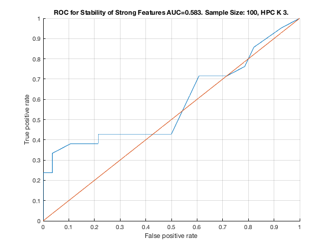

Feature Stability of GLL on TIE-Net with 100 samples.
unit_stability_type(100, 1, "TieNet")
Figure 3. ROC for Stability of Strong Features AUC=0.555. Sample Size: 100, HPC K 3. _____________________________________________________________________________________
Table 3. Feature Stability of HPC K 3 on TieNet with 100 samples.
__________________________________________________________________
SELECTED COUNTS: Strong=23, Weak=26, Irrelevant=4
TOTAL COUNTS: Strong=23, Weak=26, Irrelevant=4
Feature_Number Stability Type Path_Length N_MBS Equivalence
______________ _________ ____________ ___________ _____ ___________
21 ' 0.336 ' ' STRONG ' 1 0 21
18 ' 0.168 ' ' STRONG ' 1 0 18
22 ' 0.154 ' ' STRONG ' 2 0 21
23 ' 0.090 ' ' STRONG ' 3 0 21
1 ' 0.056 ' ' STRONG ' 1 0 1
39 ' 0.048 ' ' weak ' 4 0 39
19 ' 0.044 ' ' STRONG ' 2 0 18
20 ' 0.040 ' ' STRONG ' 3 0 18
7 ' 0.038 ' ' STRONG ' 1 0 7
24 ' 0.036 ' ' weak ' 4 0 24
46 ' 0.036 ' ' weak ' 7 0 46
30 ' 0.034 ' ' weak ' 10 0 30
38 ' 0.034 ' ' weak ' 5 0 38
2 ' 0.032 ' ' STRONG ' 2 0 1
32 ' 0.032 ' ' weak ' 8 0 32
35 ' 0.028 ' ' weak ' 7 0 35
37 ' 0.026 ' ' weak ' 6 0 37
51 ' 0.026 ' ' weak ' 4 0 51
36 ' 0.024 ' ' weak ' 8 0 36
40 ' 0.024 ' ' weak ' 3 0 40
42 ' 0.022 ' 'irrelevant' Inf 0 42
43 ' 0.020 ' 'irrelevant' Inf 0 43
33 ' 0.018 ' ' weak ' 8 0 33
9 ' 0.016 ' ' STRONG ' 3 0 7
12 ' 0.016 ' ' STRONG ' 1 36 12
27 ' 0.016 ' ' weak ' 6 36 27
3 ' 0.014 ' ' STRONG ' 4 54 1
8 ' 0.014 ' ' STRONG ' 2 81 7
53 ' 0.014 ' ' weak ' 5 81 53
5 ' 0.012 ' ' STRONG ' 3 108 1
44 ' 0.012 ' 'irrelevant' Inf 108 44
29 ' 0.010 ' ' weak ' 11 108 29
34 ' 0.010 ' ' weak ' 8 108 34
50 ' 0.010 ' ' weak ' 5 108 50
13 ' 0.008 ' ' STRONG ' 2 216 12
14 ' 0.008 ' ' STRONG ' 3 324 12
15 ' 0.008 ' ' STRONG ' 3 432 12
28 ' 0.008 ' ' weak ' 5 432 28
41 ' 0.008 ' ' weak ' 3 432 41
4 ' 0.006 ' ' STRONG ' 4 540 1
49 ' 0.006 ' ' weak ' 6 540 49
10 ' 0.004 ' ' STRONG ' 4 720 7
25 ' 0.004 ' ' weak ' 6 720 25
26 ' 0.004 ' ' weak ' 5 720 26
47 ' 0.004 ' 'irrelevant' Inf 720 47
11 ' 0.002 ' ' STRONG ' 4 900 7
17 ' 0.002 ' ' STRONG ' 4 1125 12
45 ' 0.002 ' ' weak ' 7 1125 45
48 ' 0.002 ' ' weak ' 6 1125 48
6 ' 0.000 ' ' STRONG ' 3 1350 1
16 ' 0.000 ' ' STRONG ' 2 1620 12
31 ' 0.000 ' ' weak ' 9 1620 31
52 ' 0.000 ' ' weak ' 4 1620 52